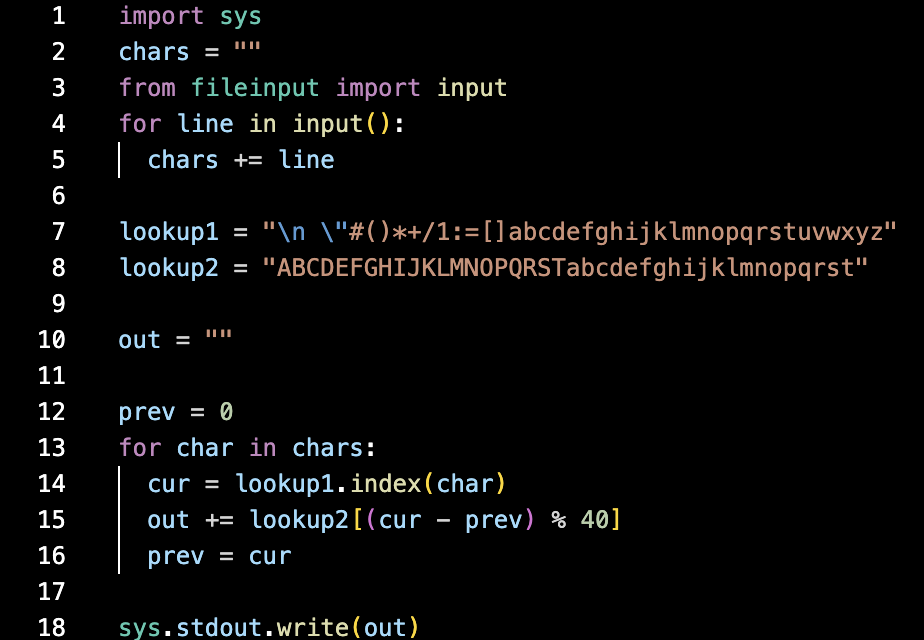
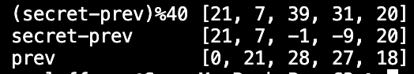
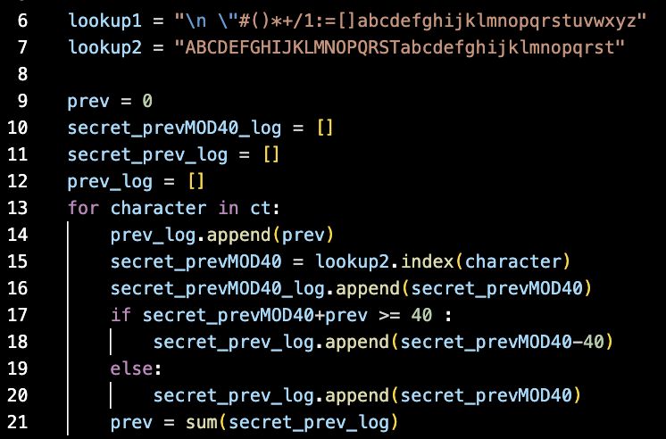
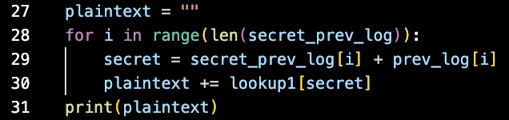
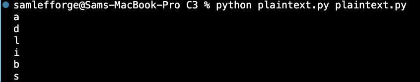
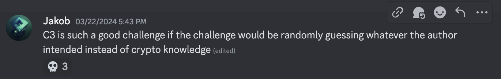

C3 was one of the more controversial challenges of picoctf2024. I think this can be attributed to the guesswork required to solve the second half of the challenge.
Anyway, here is the given encoder:
So here we see that for each character, it is looking up index (cur-prev)%40 in lookup2 and adding that to the output.
Thus, we can iterate through the output ourselves and for each character, calculate (secret-prev)%40 checking at which index the character appears in lookup2.
Here, secret is an integer representing the which index of lookup1 that contains the secret character.
But you'll notice that in order to solve for secret, we need to know prev.
It is given that prev for our first character is 0.
Feeling lazy and not wanting to do math, I decided to modify the encoder to print out (secret-prev)%40, secret-prev, and prev for each character and search for a pattern. Here I used the test string "honey".
After staring at this output for some time, I realized the following:
Given these rules I was able to calculate secret-prev and prev for each character. Here is my script for doing that. (The rules may be a little more coherent in this format as well.)
The mathematicians reading now probably realize that if I know the quantities (secret-prev) and (prev) for each character, the secret isn't so secret anymore.
Here is the plaintext. It's a python 2 script that reads in a file, and spits out the characters that are at perfect cube indices [1, 8, 27, 64, ...]
The big question is, what file are you supposed to feed this script? The answer is itself.
And per the instructions you need to wrap the final flag yourself, yielding
picoCTF{adlibs}If you can believe it, guessing which file you were supposed to input took longer than part 1 for many people including myself.
